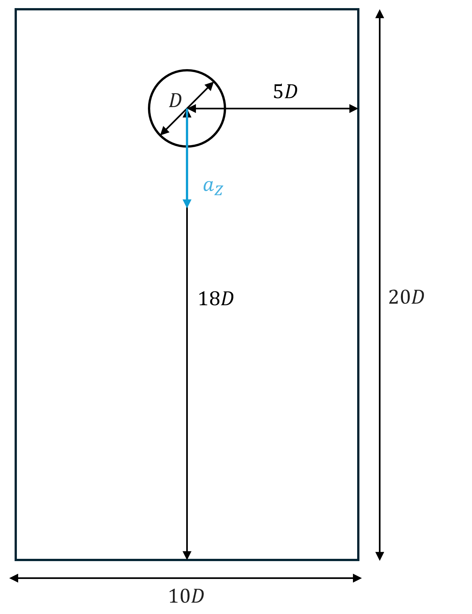
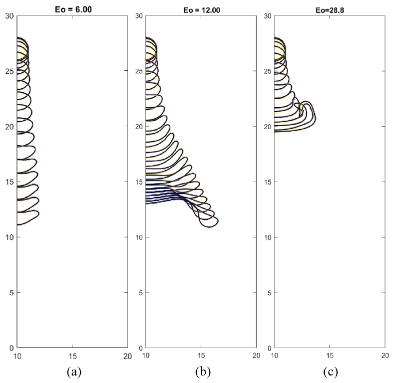
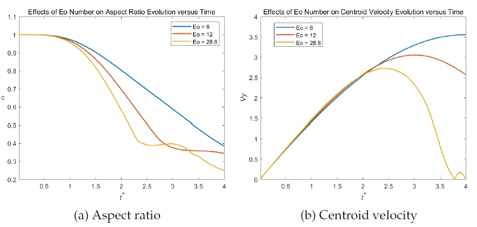
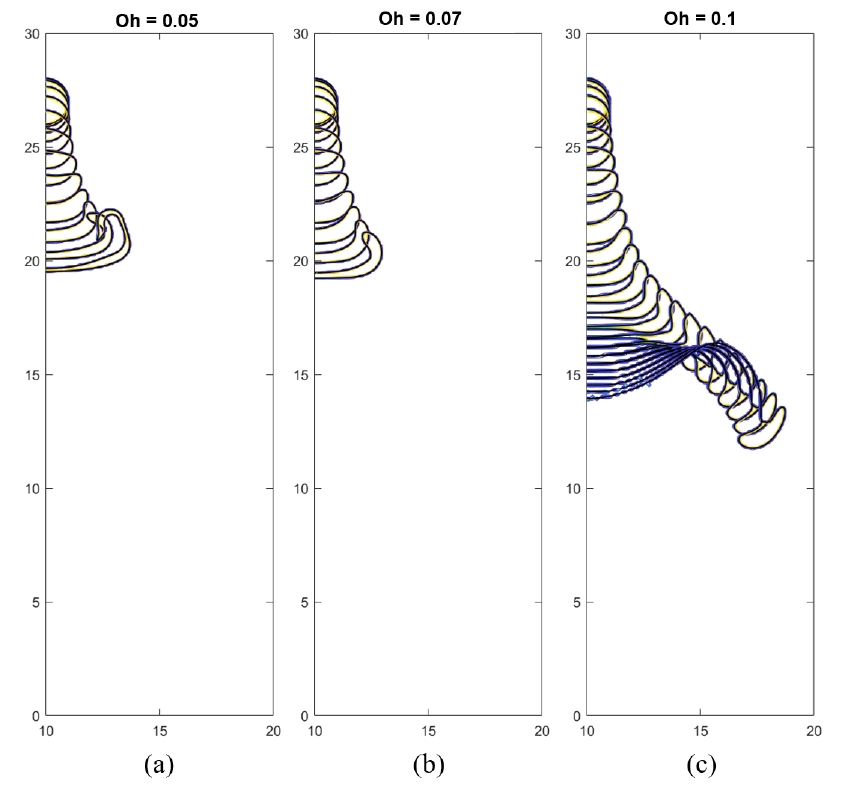
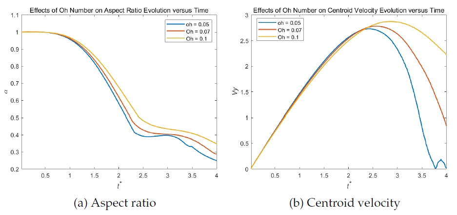

Dynamics of Falling Droplets under Body Forces
Course: Multiphase Flow
Instructor: Gretar Tryggvason
This project investigates the behavior of two-dimensional falling droplets using numerical simulations to understand their deformation and breakup dynamics under body forces. The study explores the role of Eötvös (𝐸𝑜) and Ohnesorge (𝑂ℎ) numbers in shaping droplet evolution. These simulations were conducted using the CodeC3-frt-st-RK3.m framework developed by Grétar Tryggvason[1].

Through a comprehensive analysis, the work demonstrates how low 𝐸𝑜 values result in minimal deformation, while higher values lead to complex breakup modes, such as disk-like or backward-facing bag structures. In contrast, low 𝑂ℎ numbers induce rapid deformation and fragmentation, whereas higher values stabilize the droplet's shape, resulting in the formation of thin fluid films near the symmetry axis.




This project explores the balance of body force, surface tension, and viscous effects governing droplet dynamics. The behavior of falling droplets has significant implications for fields such as meteorology, spray cooling, and pharmaceutical applications. Future studies could extend this work to three-dimensional simulations and incorporate additional external forces to further elucidate the mechanisms of droplet behavior in diverse conditions.